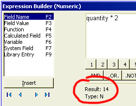
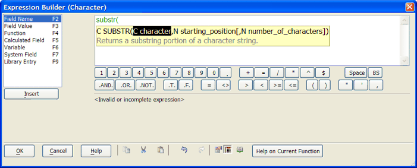
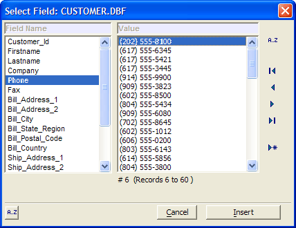
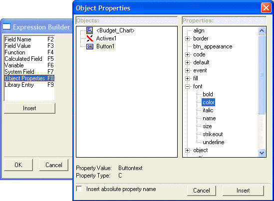

Expression Builder
Whenever you have to enter an ex<x>pression,
clicking the  icon you displays the Expression
Builder. The Expression Builder provides
access to all the inputs required to build any type of expression:
icon you displays the Expression
Builder. The Expression Builder provides
access to all the inputs required to build any type of expression:
Character Filter Expressions - evaluate to a logical value
Field Values in any Table's Record
Functions
Calculated Fields
Program Variables
System Variables
Code Snippets in your Code Library
The Expression Builder provides automatically evaluates every expression and displays the value and data type of result. This prevents you from trying to use an invalid expression.

The auto-complete feature helps you with the syntax of Xbasic functions.

The "Keyboard" below the editing window provides point-and-click operators, and can be toggled on/off by pressing the Keyboard button on the bottom right.
You can open the Expression Library by clicking
the Expression Library button  . You can store and retrieve often used expressions in the
Expression Library.
. You can store and retrieve often used expressions in the
Expression Library.
The Expression Builder uses "auto-complete" technology to help you write functions. For example, as you begin to type, the Bubble Help shows a list of functions that start with the letters you type. as you type more letters, the list becomes narrowed down. In addition, the Expression Builder shows the syntax for each function, and Alpha Anywhere prompts you for each of the function arguments.
Functions in expressions are color coded so that expressions are easier to read.
When you evaluate an expression in the Expression
Builder, VCR style buttons 

 allow you to evaluate forwards and backwards
through the records in the table, and to jump to the beginning or end
of the table, or to an explicit record number. In addition, you can display
sample values from the fields in the table.
allow you to evaluate forwards and backwards
through the records in the table, and to jump to the beginning or end
of the table, or to an explicit record number. In addition, you can display
sample values from the fields in the table.
To insert the name of a table field into an expression.
Position the cursor within the expression.
Double click Field Name or click F2 to display the Select Field dialog box.
Optionally click
 to sort the list in ascending or descending order.
to sort the list in ascending or descending order.Select the field name you want to insert and click Insert.
To insert the value of a table field into an expression.
Position the cursor within the expression.
Double click Field Value or click F3 to display the Select Field dialog box. The dialog shows up to 100 records from the beginning of the table.

Optionally click A-Z to toggle between record number order and a sorted view showing unique keys only.
When showing unique keys, click
 to toggle between ascending and descending
order.
to toggle between ascending and descending
order.Optionally, click


 to show
the first, previous, next, or last 100 records in the table.
to show
the first, previous, next, or last 100 records in the table.Optionally, click
 to display the Jump To dialog
box. Enter a record number and click OK to display
the 100 records starting with the specified record number.
to display the Jump To dialog
box. Enter a record number and click OK to display
the 100 records starting with the specified record number.Select the field name you want to insert and click Insert.
To insert a function into an expression.
Position the cursor within the expression.
Double click Function or click F4 to display the Function Finder dialog box.
Select the function and click Insert.
To insert a calculated field into an expression.
Position the cursor within the expression.
Double click Calculated Field or click F5 to display the Select Calculated Field dialog box.
Optionally click A-Z to sort the list in ascending or descending order.
Select the calculated field and click Insert.
To insert the name of an existing variable into an expression.
Position the cursor within the expression.
Double click Variable or click F6 to display the Select Variable dialog box.
Select the scope of the variable in the Category list.
The available categories will depend on the context in which the expression builder is invoked. However, all contexts will have these contexts:
Global
Session
A global variable is visible throughout Alpha Anywhere. For example, if the variable is defined by a script in one form, then any other form in your Alpha Anywhere session has access to that variable.
A session variable is visible throughout an Alpha Anywhere session. A session is created when you open a new window in Alpha Anywhere (e.g. a new form, or browse window). All scripts on a form, for example, have access to a session variable. If you swap the layout displayed in a window (for example, by pressing the F8 key while viewing a form, to switch to a browse view), session variables remain visible to the new layout displayed in the window (because it is still the same session).
If the Expression Builder is invoked from within a Layout, then the Layout category is available.
A Layout variable is visible to all scripts and expressions in a form, but if the Layout in the window is swapped (for example, by opening a new form in the same window, or switching to a browse view), then the Layout variables are no longer available.
Select the variable you want to insert from the Variable list and click Insert.
To insert the name of a system field into an expression.
Position the cursor within the expression.
Double click System Field or click F7 to display the System Fields dialog box.
Select the field and click Insert.
To insert an expression from a library into an expression.
Position the cursor within the expression.
Double click Library Entry or click F9 to display the Expression Library dialog box.
Select the expression and click Insert.
"Object Properties" appears in appropriate contexts. For example if you are building a calculation value expression for a form or a browse layout, or are defining an expression in Action Scripting for an action that is bound to an event on a form or a browse, the Object Properties category will allow you to refer to any property of any object on the layout.

See Also